Hanya layout yang kamu catat yang berubah. Kiri v2 (sekarang di branch), kanan v3 (draft). Judul dan subjudul tetap Instrument Serif; Figtree miring dan English hanya untuk konten tipe dialog.
Sekarang memakai aturan yang sama dengan dialog berpasangan (23) dan CP-01: satu aturan untuk hewan, benda, dan manusia. Burungnya berdampingan dan langit kosong ada di atas, jadi dua kalimat di atas burung, rata tengah, dengan celah di tengah. Figtree tegak/miring, English.
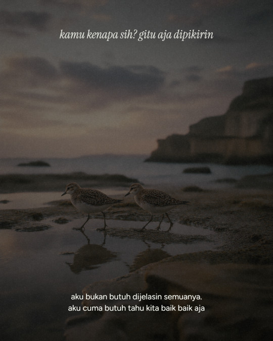
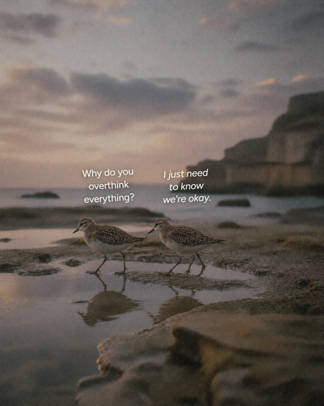
Kalimat turun dari bingkai atas ke langit di atas bangunan, dekat subjeknya. Posisinya diatur per foto.
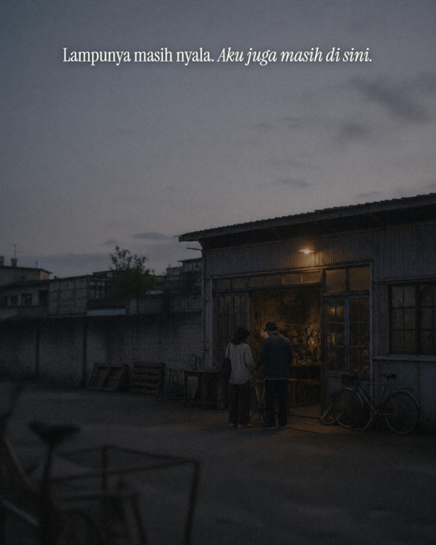
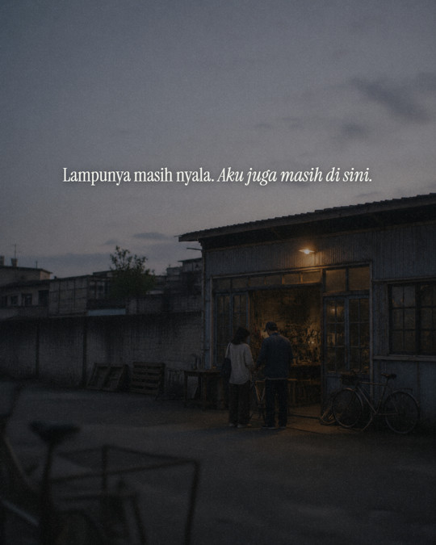
Teks tiap slide sekarang duduk tepat di atas titik garis waktunya, rata tengah segaris dengan titik. Berlaku untuk semua panorama tipe ini.
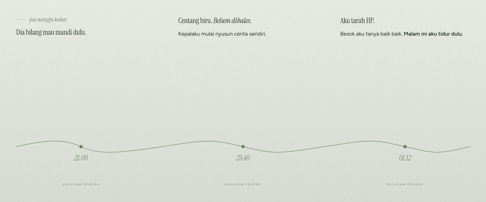
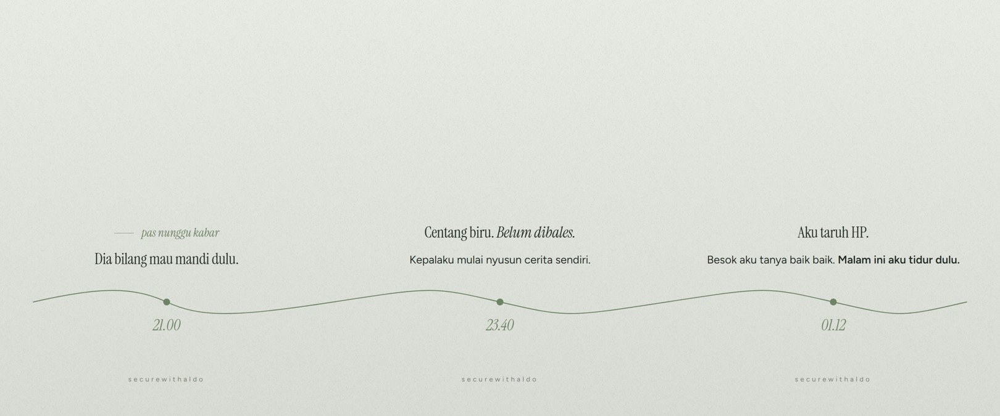
Font Figtree (cemas tegak, jawaban miring, ukuran sama) dan English. Preview sekarang memuat satu percakapan lengkap, bukan cuma slide pertama.
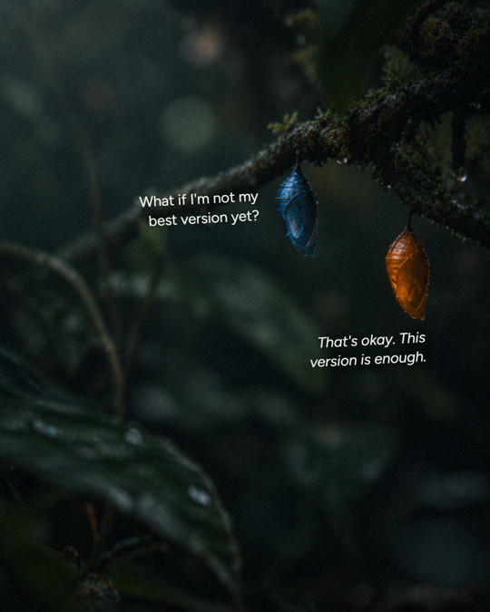
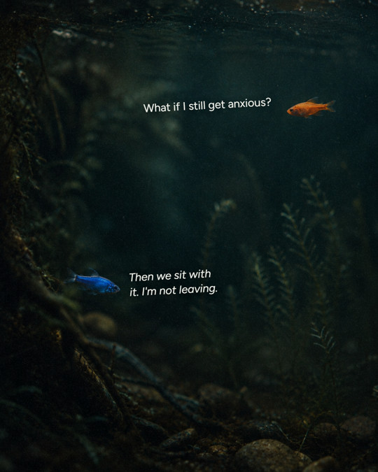
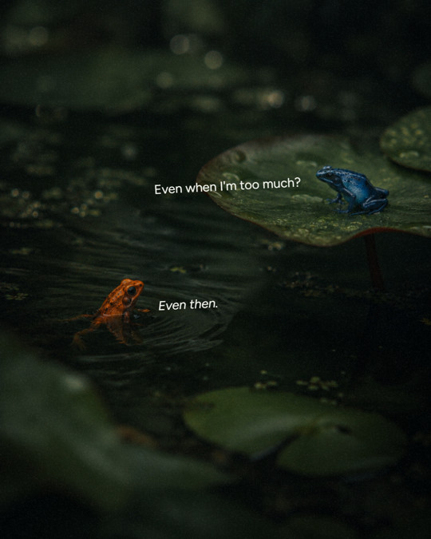
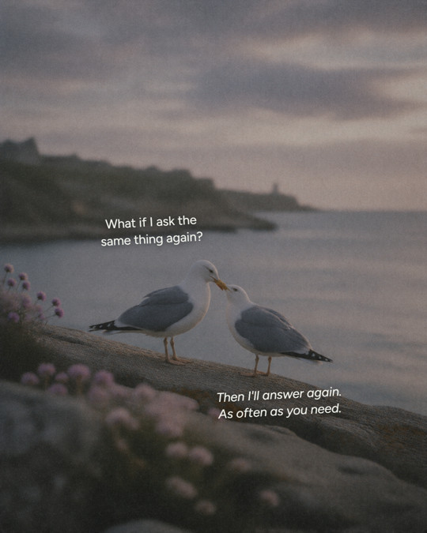
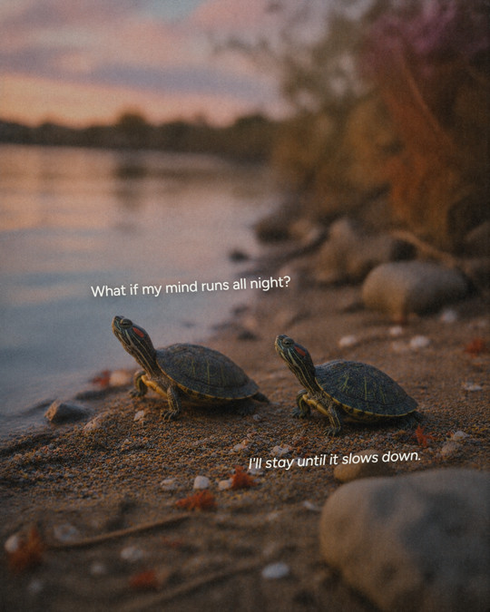
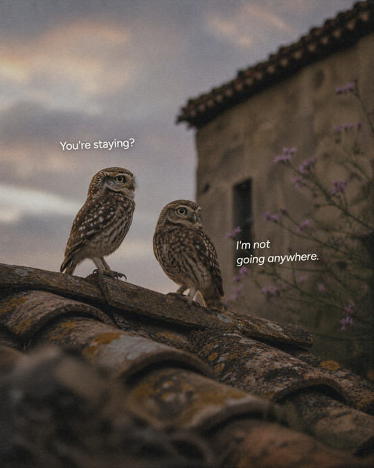
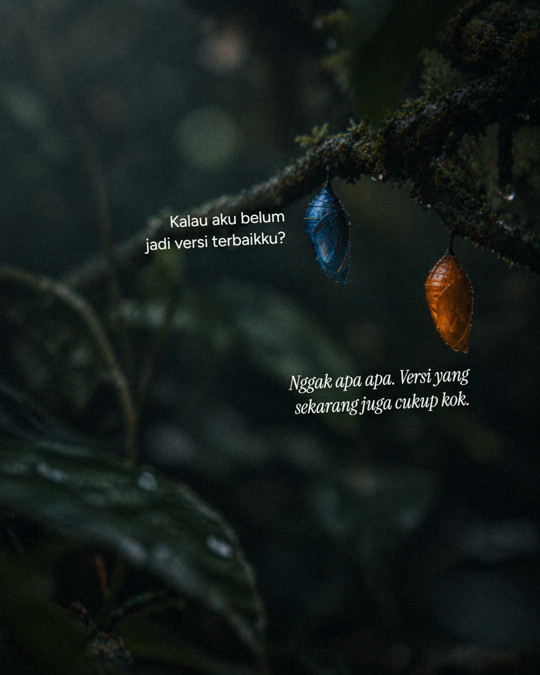